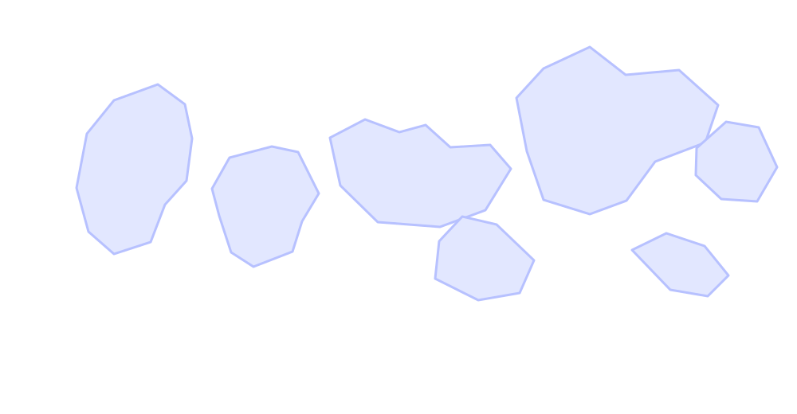

Projects
Tech stack
Languages & Frameworks
Java, Spring Boot, Python, Flask, C++, JavaScript, React, Node
Systems & Tooling
Microservices, distributed systems, Kafka, REST/GraphQL APIs, Terraform, Docker, GitHub Actions
Machine Learning
Model deployment, feature pipelines, experiment tracking, data visualization
Travel log
Pin drops that keep me inspired—click to peek at a few favorite shots.
